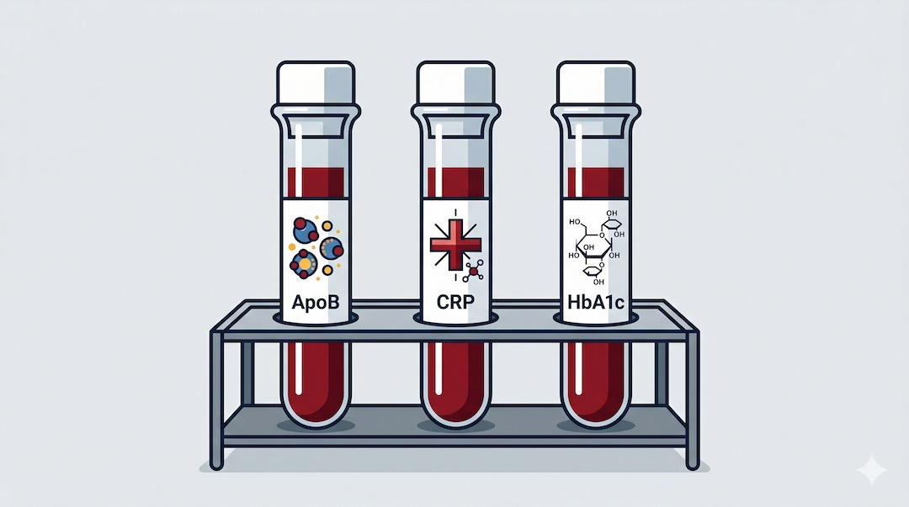
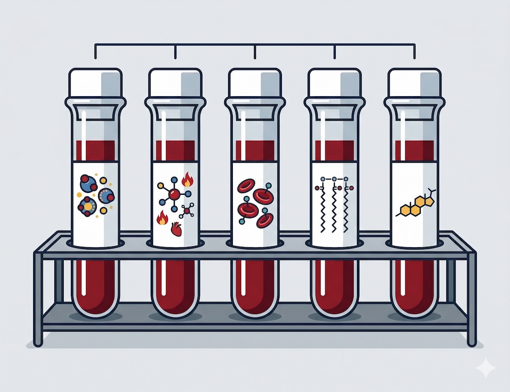
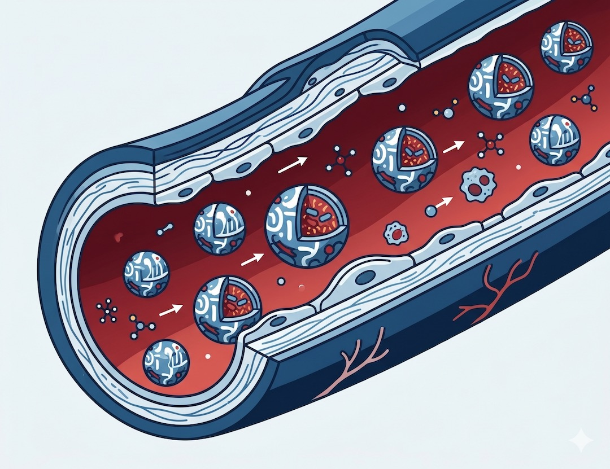
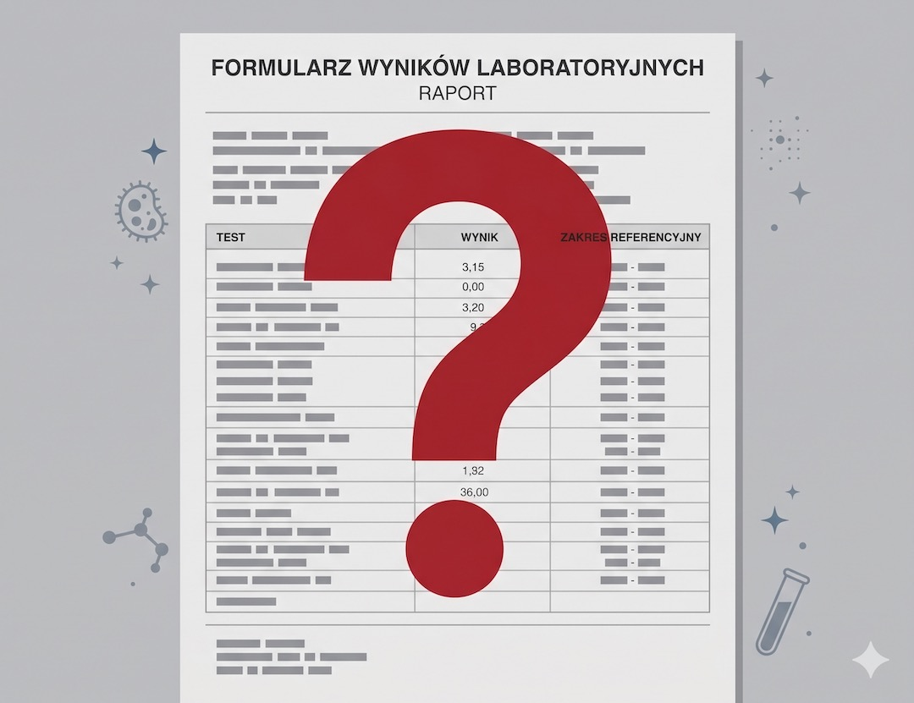
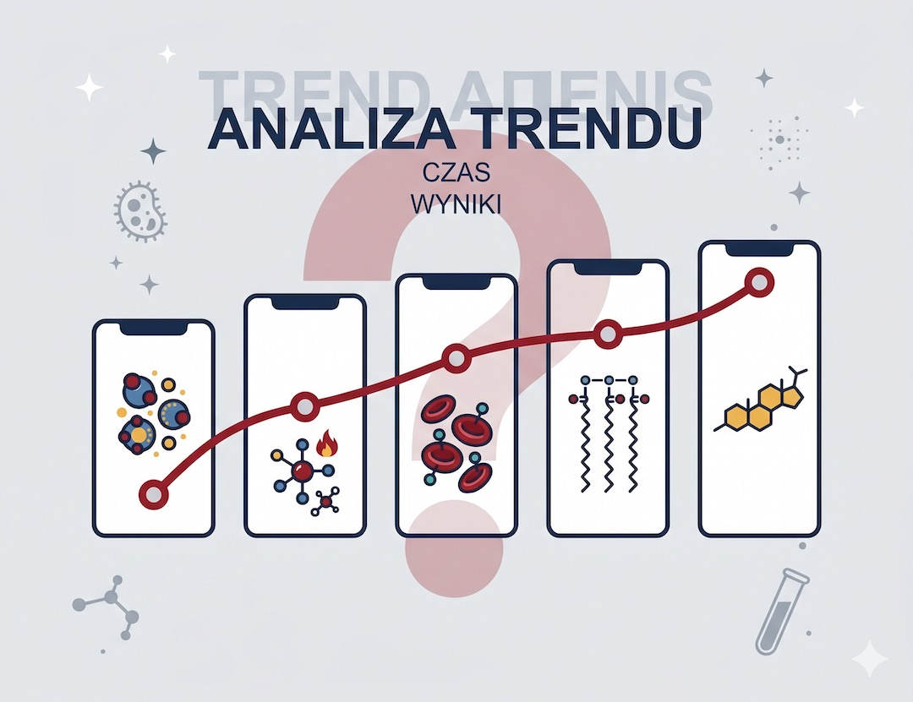
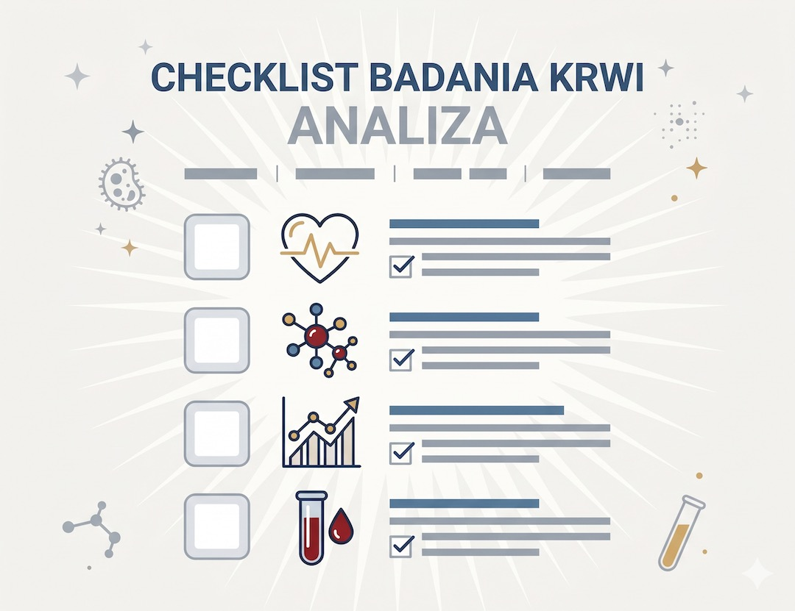

Zrobiłeś pakiet badań, wyniki wróciły — i teraz siedzisz z kartką pełną liczb, nie wiedząc, czy masz się bać, czy świętować. Markery krwi budzą ogromne emocje. Problem w tym, że większość ludzi rozumie je albo za dosłownie, albo wcale. Czas to naprawić.
Szybka odpowiedź
Najlepszą ocenę zdrowia po 50-tce daje trend markerów, a nie pojedynczy wynik z jednego dnia. Kontroluj regularnie glukozę, lipidogram, CRP i funkcję nerek, najlepiej w tym samym laboratorium co 6-12 miesięcy. Jeśli dwa kolejne pomiary idą w złą stronę, reaguj od razu, zanim pojawią się objawy.
Kluczowe wnioski
Kluczowe wnioski
- ApoB jest dokładniejszym predyktorem ryzyka sercowo-naczyniowego niż klasyczny LDL-cholesterol — potwierdza to analiza ponad 500 tys. uczestników UK Biobank z 2024 roku.
- Markery nowotworowe u zdrowych osób bez objawów nie są zalecane jako badanie przesiewowe — ryzyko fałszywych alarmów przewyższa korzyści.
- Lp(a) jest w 70–90% uwarunkowane genetycznie i powinno być zmierzone co najmniej raz w życiu — większość lekarzy wciąż o tym nie mówi.
- Jeden wynik to za mało. Trend w czasie — kilka pomiarów w tych samych warunkach — daje znacznie więcej informacji niż jednorazowy odczyt.
Czym właściwie jest marker biologiczny?
Marker biologiczny (biomarker) to każda substancja — białko, lipid, enzym, hormon — którą można zmierzyć w krwi, moczu lub tkance w sposób obiektywny i powtarzalny. Jej poziom informuje, czy dany proces w organizmie przebiega normalnie, jest zaburzony, albo czy toczy się jakaś choroba. Na tym polega siła markerów: dają liczby, a nie tylko „poczucie” zdrowia.
Kluczowe słowo to jednak kontekst. Marker nie jest diagnozą — jest jednym z elementów układanki. Współczesna medycyna traktuje markery jako narzędzie wspomagające, nie rozstrzygające. Interpretacja zawsze wymaga obrazu klinicznego, historii pacjenta i — w przypadku wielu schorzeń — badań obrazowych lub biopsji. Samo badanie krwi, nawet drogie i rozszerzone, nie zastąpi wizyty lekarskiej.
Jeśli chcesz uporządkować codzienną profilaktykę, zobacz też praktyczne porady zdrowotne dla osób po 50. roku życia.

ApoB vs LDL: dlaczego twój lekarz mierzy niekoniecznie to, co ważne?
Przez dekady LDL-cholesterol był świętą krową kardiologii. Tymczasem badania z 2024 roku na ponad 500 tysiącach uczestników UK Biobank wykazały coś ważnego: gdy wyniki LDL i ApoB były rozbieżne, ryzyko sercowo-naczyniowe podążało za ApoB — nie za LDL. To zasadnicza różnica, bo LDL mierzy masę cholesterolu, a ApoB liczy liczbę cząstek aterogennych.
Każda cząstka LDL, VLDL czy IDL niesie dokładnie jedną cząsteczkę ApoB. Dlatego ApoB to de facto licznik „pocisków”, które mogą uszkodzić ścianę tętnicy. National Lipid Association w konsensusie z 2024 roku zaproponowało stratyfikowane cele: poniżej 90 mg/dL dla ryzyka pośredniego, poniżej 70 mg/dL dla wysokiego i poniżej 60 mg/dL dla bardzo wysokiego. Jeśli twój lekarz mierzy tylko LDL i nie robi ApoB — masz prawo zapytać dlaczego.
W kontekście ryzyka serca pomocny będzie również materiał ciśnienie tętnicze po 50 i interpretacja wyników.

Lp(a): marker, który większość lekarzy ignoruje?
Lipoproteina(a) — Lp(a) — to jeden z najbardziej niedocenianych czynników ryzyka sercowo-naczyniowego. W 70–90% jest uwarunkowana genetycznie, co oznacza, że dieta i ćwiczenia mają na nią niewielki wpływ. Podwyższone Lp(a) dotyczy szacunkowo 1,5 miliarda ludzi na świecie i wiąże się z wyższym ryzykiem zawału, udaru i zwężenia zastawki aortalnej. Mimo to wciąż rzadko jest mierzone nawet u osób z rozpoznanymi czynnikami ryzyka.
Aktualne wytyczne międzynarodowe zalecają co najmniej jeden pomiar Lp(a) w ciągu życia. Jeśli wynik przekracza 50 mg/dL (125 nmol/L), jest to istotny czynnik ryzyka, który powinien zaostrzyć podejście do pozostałych markerów — LDL, ApoB, ciśnienia. Leki swoiście obniżające Lp(a) są jeszcze w fazie badań klinicznych (m. in. badanie HORIZON z odczytem spodziewanym w 2025 roku), ale sama wiedza o poziomie Lp(a) już teraz pozwala na lepsze decyzje.
Uzupełnieniem jest artykuł jak czytać lipidogram po 50, szczególnie przy rozbieżności LDL i ApoB.

hs-CRP i homocysteina: markery stanu zapalnego — ile im wierzyć?
hs-CRP pomaga ocenić tło zapalne, ale pojedynczy wynik łatwo zaburza infekcja, ciężki trening czy niedosypianie. Dlatego interpretacja ma sens dopiero w trendzie i z kontekstem klinicznym. Homocysteina bywa markerem pomocniczym, zwłaszcza przy niedoborach witamin z grupy B.
Homocysteina to aminokwas, którego wysokie stężenie (powyżej 15 µmol/L) wiąże się z uszkodzeniem śródbłonka naczyń i zwiększoną krzepliwością. Dobra wiadomość: podwyższona homocysteina jest w wielu przypadkach korygowalna — suplementacja metylowanymi formami witamin B6, B12 i kwasu foliowego często normalizuje poziom. Jest jednak istotna różnica między „korygujemy marker” a „zmniejszamy ryzyko kliniczne” — nie każde badanie to potwierdza, dlatego homocysteina pozostaje markerem pomocniczym, nie podstawowym.
Przy wdrażaniu zmian stylu życia przydaje się plan z tekstu jak zacząć trening po 50, żeby poprawić markery w czasie.
Markery nowotworowe: mit „badania na raka z krwi”?
To prawdopodobnie najbardziej nadużywana kategoria markerów. PSA, CEA, CA-125, AFP, CA 19-9 — brzmią poważnie, a prywatne laboratoria chętnie umieszczają je w „pakietach profilaktycznych”. Problem jest fundamentalny: markery nowotworowe nie są zalecane jako badanie przesiewowe u zdrowych osób bez objawów. Wytyczne są tu jednoznaczne — zarówno polskie towarzystwa onkologiczne, jak i europejskie instytucje naukowe.
Dlaczego? Dwa powody. Po pierwsze, fałszywie dodatnie wyniki — markery mogą być podwyższone przy infekcjach, stanach zapalnych, chorobach łagodnych. Jeden nieprawidłowy wynik prowadzi do kosztownej i stresującej diagnostyki, która często kończy się stwierdzeniem „wszystko w porządku”. Po drugie, fałszywie ujemne — wczesny nowotwór bardzo często nie uwalnia markerów w ilościach wykrywalnych we krwi. Prawidłowy marker PSA nie wyklucza raka prostaty. Prawidłowe CA-125 nie wyklucza raka jajnika. To nie są testy „wyławiające raka w zarodku” — to narzędzia do monitorowania u osób już leczonych lub z konkretnymi wskazaniami klinicznymi.

Pojedynczy wynik czy trend? Jak czytać markery jak klinicysta?
Największy błąd, który popełniają pacjenci (i, uczciwie, część lekarzy) to traktowanie jednego wyniku jako wyroku. Marker to zdjęcie w konkretnej chwili — z konkretnym stanem nawodnienia, poziomem zmęczenia, ewentualną infekcją, godzinami od posiłku. Jeden wynik hs-CRP 3,2 mg/L u osoby, która tydzień wcześniej miała anginę, znaczy coś innego niż taki sam wynik u kogoś zdrowego, niezmordowanego.
Klinicyści oceniają trend — kilka pomiarów w podobnych warunkach w odstępach czasu. Dotyczy to szczególnie markerów nowotworowych (gdzie wzrost stężenia w kolejnych badaniach jest silniejszym sygnałem niż jednorazowe przekroczenie normy) oraz markerów zapalnych. Dlatego zanim zaczniesz interpretować pojedynczy wynik, zadaj sobie pytanie: czy mam poprzedni pomiar do porównania? Czy warunki były podobne? Jeśli nie — to jest punkt startowy, nie alarm.

Które markery warto robić po 50-tce? Praktyczna lista?
Po 50-tce ryzyko chorób sercowo-naczyniowych, cukrzycy i nowotworów rośnie statystycznie. To sprawia, że regularne badania mają największy sens właśnie teraz. Ale „regularne badania” to nie to samo co „pakiet premium z 40 markerami”. Warto skupić się na tych, które mają solidne dowody kliniczne i bezpośrednio przekładają się na decyzje terapeutyczne.
Lista z uzasadnieniem naukowym: lipidogram rozszerzony z ApoB — coroczna kontrola stanu aterogenności; Lp(a) — wystarczy raz w życiu, chyba że w rodzinie były przedwczesne zawały; hs-CRP — ocena tła zapalnego, najlepiej w kilku pomiarach; HbA1c — najlepszy marker długoterminowej kontroli glikemii, lepszy niż glukoza na czczo; homocysteina — pomocniczo, szczególnie przy niedoborach witamin B; TSH — tarczyca wpływa na lipidy, wagę i serce; 25(OH)D — witamina D, której niedobór dotyczy większości Polaków po 50-tce. Markery nowotworowe — tylko ze wskazania lekarskiego, nie jako pakiet „na wszelki wypadek”.

Najczęściej zadawane pytania
Najczęściej zadawane pytania
Czy podwyższony marker nowotworowy oznacza raka?
Nie. Podwyższony marker nowotworowy nie jest diagnozą raka. Markery mogą rosnąć przy infekcjach, stanach zapalnych, chorobach łagodnych i wielu innych stanach. Diagnoza onkologiczna zawsze wymaga badania histopatologicznego. Marker to sygnał do dalszej diagnostyki, nie wyrok.
Czy warto robić markery nowotworowe profilaktycznie?
Według aktualnych wytycznych naukowych — nie. Markery nowotworowe u zdrowych osób bez objawów generują fałszywe alarmy i fałszywe poczucie bezpieczeństwa. Potwierdzonych programów przesiewowych jest niewiele: mammografia, kolonoskopia, cytologia. Profilaktyczne „pakiety markerów” z laboratorium prywatnego nie mają uzasadnienia w dowodach.
Czym różni się ApoB od LDL-cholesterolu?
LDL-cholesterol mierzy masę cholesterolu w cząstkach LDL. ApoB mierzy liczbę wszystkich aterogennych cząstek lipoproteinowych (LDL, VLDL, IDL). Gdy wyniki są rozbieżne, ryzyko sercowo-naczyniowe bardziej odpowiada ApoB. Dlatego eksperci National Lipid Association uznali ApoB za lepszy marker aterogenności — szczególnie u osób z cukrzycą, otyłością lub insulinoopornością.
Jak często mierzyć markery sercowo-naczyniowe po 50-tce?
Lipidogram z ApoB warto kontrolować raz w roku przy braku leczenia lub po każdej zmianie terapii. hs-CRP — kilka razy w roku, ale wyłącznie gdy nie ma aktywnej infekcji. Lp(a) wystarczy zmierzyć raz, chyba że rodzina obciążona jest przedwczesnymi zawałami. HbA1c — raz w roku. Najważniejsza zasada: oceniaj trend, nie pojedynczy wynik.
Czy wysoka homocysteina to poważny problem?
Bardzo wysoka homocysteina (powyżej 15 µmol/L) wiąże się z większym ryzykiem uszkodzenia śródbłonka naczyń i zakrzepicy. Dobra wiadomość: u wielu osób jest to korygowalny czynnik ryzyka — suplementacja metylowanymi formami B6, B12 i kwasu foliowego często normalizuje poziom. Jednak samo „naprawienie markera” nie zawsze przekłada się automatycznie na zmniejszenie ryzyka klinicznego — to nadal przedmiot badań.
Źródła
Źródła po 50-tce warto wdrażać krok po kroku i od razu łączyć teorię z praktyką. Dzięki temu łatwiej utrzymać regularność, poprawić bezpieczeństwo działań i szybciej zauważyć trwałe efekty zdrowotne w codziennym życiu.
- Role of apolipoprotein B in the clinical management of cardiovascular risk — National Lipid Association Expert Consensus 2024
- Lipoprotein(a): the neglected risk factor in cardiovascular health — Frontiers in Cardiovascular Medicine 2026
- Lipoprotein(a) in the Year 2024: A Look Back and a Look Ahead — Arteriosclerosis, Thrombosis and Vascular Biology
- Applications and challenges of biomarker-based predictive models in proactive health management — Frontiers in Public Health 2025
- Novel Biomarkers for Atherosclerotic Disease: Advances in Cardiovascular Risk Assessment — PMC 2023
- Criteria to Assess the Predictive and Clinical Utility of Novel Models, Biomarkers, and Tools for Risk of Cardiovascular Disease — AHA Scientific Statement 2024
- Biomarkers as Prognostic Predictors and Therapeutic Guide in Critically Ill Patients — Journal of Personalized Medicine 2023
- Markery nowotworowe — znaczenie, ograniczenia i praktyczne zastosowanie — Onkokurier 2025
Uwaga: Artykuł ma charakter informacyjny i edukacyjny. Nie zastępuje konsultacji lekarskiej, diagnozy ani leczenia.